1과목: 응용역학
1. 그림과 같은 원형 단주의 단면에서 핵(Core)의 반지름(e)은?
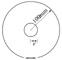
2. 그림과 같은 보에서 지점 A의 수직반력(VA)은?
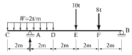
3. 다음 중 부정정구조물의 해법으로 적합하지 않은 것은?
4. 지름 D인 원형단면 보에 휨모멘트 M이 작용할 때이 보에 작용하는 최대 휨응력은?
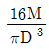
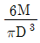
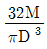
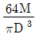
5. 재질, 단면적, 길이가 같은 장주에서 양단활절 기둥의 좌굴하중과 양단고정 기둥의 좌굴하중과의 비는?
6. 다음 그림과 같은 구조물에서 이 보의 단면이 받는 최대전단응력의 크기는?
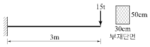
7. 단면상승모멘트의 단위로서 옳은 것은?
8. 다음 그림과 같은 단순보의 중앙점의 휨모멘트는?
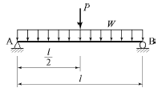
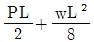
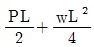
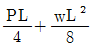
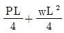
9. 지름 d=2cm 인 강봉을 P=10tf 의 축방향력으로 인장시킬때 봉의 횡방향 수축량은? (단, 푸아송비v=1/3, E=2×106kgf/cm2)
10. 그림과 같은 라멘에서 C점의 휨모멘트는?
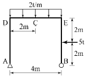
11. 그림과 같은 보에서 D점의 전단력은?
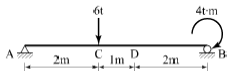
12. 전체길이 L인 단순보의 경간 중앙에 집중하중 P가수직으로 작용하는 경우 최대 처짐은? (단, EI일정하다.)
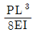
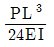
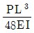
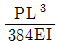
13. 그림과 같은 1차 부정정보의 부재 중에서 B지점을 제외한 휨모멘트가 0이 되는 곳은 A점에서 얼마 떨어진곳인가? (단, 자중은 무시한다.)
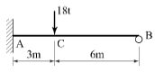
14. 그림과 같은 트러스에서 D1부재의 부재력은?
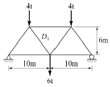
15. 지름 30cm인 단면의 보에 9tf의 전단력이 작용할때 이 단면에 일어나는 최대 전단응력은 약 얼마인가?
16. 축방향력 N, 단면적 A, 탄성계수 E일 때 축방향 변형에너지를 나타내는 식은?
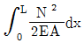
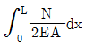
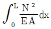
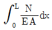
17. 다음 그림과 같은 역계에서 작용하중의 합력(R)의 위치 x값은?
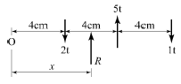
18. 그림과 같이 ABC의 중앙점에 10tf 의 하중을 달았을 때 정지하였다면 장력 T의 값은 몇 tf인가?
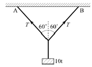
19. 그림과 같은 라멘(Rahmen)을 판별하면?
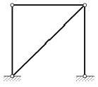
20. 단면적 A인 도형의 중립축에 대한 단면2차모멘트를 IG라 하고 중립축에서 y만큼 떨어진 축에 대한 단면 2차모멘트를 I라 할 때 I로 옳은 것은?
2과목: 측량학
21. 레벨 측량에서 레벨을 세우는 횟수를 짝수로 하여 소거할 수 있는 오차는?
22. 수위 관측소의 위치 선정 시 고려사항으로 옳지 않은 것은?
23. 동일 지점간 거리 관측을 3회, 5회, 7회 실시하여 최확값을 구하고자 할 때 각 관측값에 대한 보정값의 비(3회 : 5회 : 7회)로 옳은 것은?
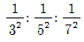
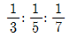
24. 다음 중 물리학적 측지학에 속하지 않는 것은?
25. 그림과 같은 표고의 지형을 평탄하게 정지작업을 하였을 때 평균표고는?
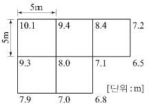
26. A점 좌표(XA=212.32m, YA=113.33m), B점 좌표(XB=313.38m, YB=12.27m), AP 방위각 TAP=80°일 때 ∠PAB(=θ)의 값은?
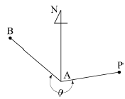
27. 삼각망 조정의 조건에 대한 설명으로 옳지 않은 것은?
28. 국토지리정보원에서 발행하는 1:50000지형도 1매에 포함되는 지역의 범위는?
29. 수평각을 관측하는 경우, 조정 불완전으로 인한 오차를 최소로 하기 위한 방법으로 가장 좋은 것은?
30. 매개변수(A)가 90m인 클로소이드 곡선상의 시점에서 곡선길이(L)가 30m일 때 곡선의 반지름(R)은?
31. 축척 1:25000 지형도에서 5% 경사의 노선을 선정하려면 등고선(주곡선) 사이에 취해야 할 도상거리는?
32. 평판측량 방법 중 측량지역 내에 장애물이 없어 시준이 용이한 소지역에 주로 사용하는 방법으로 평판을 한 번 세워서 방향과 거리를 관측하여 여러 점들의 위치를 결정할 수 있는 방법은?
33. 촬영고도 700m에서 촬영한 사진 상에 굴뚝의 윗부분이 주점으로부터 72mm 떨어져 나타나있으며, 굴뚝의 변위가 6.98mm일 때 굴뚝의 높이는?
34. 도로의 단곡선 계산에서 노선기점으로부터 교점까지의 추가거리와 교각을 알고 있을 때 곡선시점의 위치를 구하기 위해서 계산되어야 하는 요소는?
35. 삼각점 표석에서 반석과 주석에 관한 내용 중 틀린 것은?
36. 완화곡선설치에 관한 설명으로 옳지 않은 것은?
37. 곡선 설치에서 교각이 35°, 원곡선 반지름이 500m일 때 도로 기점으로부터 곡선 시점까지의 거리가 315.45m이면 도로 기점으로부터 곡선 종점까지의 거리는?
38. 그림과 같이 ΔABC의 토지를 한 변 BC에 평행한 DE 로 분할하여 면적의 비율이 ΔADE:□BCED=2:3이 되게 하려고 한다면 AD의 길이는? (단, AB의 길이는 50m)
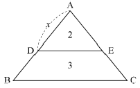
39. 지상고도 3,000m의 비행기 위에서 초점거리 150mm인 사진기로 촬영한 항공사진에서 길이가 30m인 교량의 길이는?
40. 교호수준 측량을 실시하여 다음의 결과를 얻었다. A점의 표고가 25.020m일 때 B점의 표고는? (단, a1=2.42m, a2=0.68m, b1=3.88m, b2=2.11m)
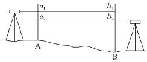
3과목: 수리학
41. 단면적이 200cm2인 90°굽어진 관(1/4 원의 형태)을 따라 유량 Q=0.⑤m3/s의 물이 흐르고 있다. 이 굽어진 면에 작용하는 힘(P)은? (단, 무게 1kg=9.8N)
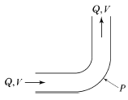
42. 수평으로부터 상향으로 60°를 이루고 20m/s로 사출되는 분수의 최대 연직 도달높이는? (단, 공기 및 기타의 저항은 무시함)
43. 관수로에 대한 설명으로 옳은 것은?
44. 지하수에서 Darcy의 법칙이 실측값과 가장 잘 일치하는 경우의 지하수 흐름은?
45. Bernoulli 정리의 적용 조건이 아닌 것은?
46. 층류와 난류에 관한 설명으로 옳지 않은 것은?
47. 관의 길이가 80m, 관경 400mm인 주철관으로 0.1m3/s의 유량을 송수할 때 손실수두는? (단, Chezy의 평균 유속계수 C=70 이다.)
48. 부체가 안정되기 위한 조건으로 옳은 것은? (단, C=부심, G=중심, M=경심)
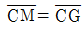
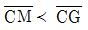
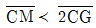
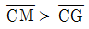
49. 두 개의 수조를 연결하는 길이 3.7m의 수평관속에 모래가 가득 차 있다. 두 수조의 수위차를 2.5m, 투수계수를 0.5m/s라고 하면 모래를 통과할 때의 평균 유속은?
50. 물의 성질에 관한 설명 중 틀린 것은?
51. 그림과 같이 높이 2m인 물통에 물이 1.5m만큼 담겨져 있다. 물통이 수평으로 4.9m/s2의 일정한 가속도를 받고 있을 때 물통의 물이 넘쳐흐르지 않기 위한 물통의 최소 길이는?
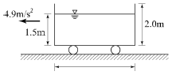
52. 삼각 위어의 유량공식으로 옳은 것은? (단, 위어의 각 : θ, 유량계수 : C, 월류 수심: H)
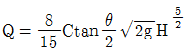
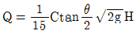
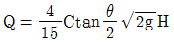
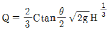
53. 등류의 정의로 옳은 것은?
54. 어떠한 경우라도 전단응력 및 인장력이 발생하지 않으며 전혀 압축되지도 않고, 마찰저항 hL=0인 유체는?
55. 직사각형단면 개수로의 수리상 유리한 형상의 단면에서 수로의 수심이 2m라면 이 수로의 경심(R)은?
56. 두 단면간의 거리가 1km, 손실수두가 5.5m, 관의 지름이 3m라고 하면 관 벽의 마찰력은? (단, 무게 1kg= 9.8N)
57. 수로의 취입구에 폭 3m의 수문이 있다. 문을 h 올린 결과, 그림과 같이 수심이 각각 5m와 2m가 되었다. 그 때 취수량이 8m3/s이었다고 하면 수문의 개방 높이 h는? (단, C=0.60)
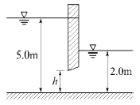
58. 수심이 3m, 하폭이 20m, 유속이 4m/s인 직사각형단면 개수로에서 비력은? (단, 운동량보정계수 η=1.1)
59. 비에너지와 수심의 관계 그래프에서 한계수심보다 수심이 작은 흐름은?
60. 직사각형 단면의 개수로에서 한계유속(Vc)과 한계 수심(hc)의 관계로 옳은 것은?
4과목: 철근콘크리트 및 강구조
61. 다음의 프리스트레스 손실 원인 중 도입할 때 일어나는 손실(즉시 손실)이 아닌 것은?
62. 고정하중 10kN/m, 활하중 20kN/m의 등분포하중을 받는 경간 8m의 단순지지보에서 하중계수와 하중조합을 고려한 계수모멘트는?
63. 길이 6m의 단순 철근콘크리트보에서 처짐을 계산하지 않아도 되는 보의 최소 두께는 얼마인가? (단, 보통 콘크리트(mc=2,300kg/m3)를 사용하며, fck=21MPa, fy=400MPa)
64. 유효깊이가 800mm인 철근콘크리트보에 수직스터럽을 설치하고자 한다. 전단철근이 부담하는 전단력 Vs가
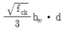
를 초과한다면 수직스터럽의 최대간격은? (단, fck : 콘크리트의 설계기준강도, fy : 보의 폭, d : 보의 유효깊이)65. 배력철근을 배치하는 이유로서 잘못된 것은?
66. 플랜지의 유효폭이 b이고 복부의 폭이 bw인 복철근 T형 단면보에서 중립축이 복부내에 있고 부(-)의 휨 모멘트를 받아 복부의 아래쪽이 압축을 받게될 때의 응력 계산방법으로 옳은 것은?
67. 균형철근량보다 적은 인장철근량을 가진 보가 휨에 의해 파괴되는 경우에 대한 설명으로 옳은 것은?
68. 압축지배단면으로서 띠철근으로 보강된 철근콘크리트부재에 적용하는 강도감소계수(ø)는?
69. 길이가 10m인 PSC보에서 포스트텐션 공법으로 설계 할 때 강선에 1,000MPa의 인장력을 가했더니 강선이 2.0mm 풀렸다. 이 때 프리스트레스의 감소량은? (단, Ep=2.0×105MPa 이고 일단정착이다.)
70. 강판을 리벳 이음할 때 지그재그(zigzag)형으로 리벳을 배치할 경우 재편의 순폭은 최초의 리벳구멍에 대하여 그 지름을 빼고 다음 것에 대하여는 다음 중 어느 식을 사용하여 빼주는가? (단, g : 리벳선간거리, p : 리벳의 피치)
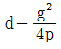
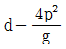
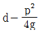
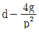
71. 철근의 겹침이음에서 A급 이음의 조건에 대한 설명으로 옳은 것은?
72. 강재의 연결부 구조 사항으로 옳지 않은 것은?
73. 강도설계법의 기본가정에 대한 설명으로 틀린 것은?
74. 단철근 직사각형보에서 fy=300MPa , d=600mm 일 때 중립축 거리 c는? (단, 강도설계법에 의한 균형보임)
75. fck=28MPa , fy=400MPa 인 경우 표준갈고리를 갖는 인장이형철근의 기본정착길이(lhb)로 옳은 것은? (단, 사용 철근은 D25(공칭지름=25.4mm)이고, 도막되지 않은 철근이고, 사용하는 콘크리트는 보통중량 콘크리트이다.)
76. 그림과 같이 등분포하중을 받는 단순보에 PS강재를 e=50mm만큼 편심시켜서 직선으로 작용시킬 때, 보 중앙 단면의 하연 응력은 얼마인가? (단, 자중은 무시한다.)
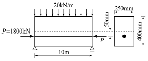
77. 철근콘크리트 보에 스터럽을 배근하는 가장 주된 이유는?
78. As′=1,400mm2로 배근된 그림과 같은 복철근보의 탄성처짐이 10mm라 할 때 1년 후 장기처짐을 고려한 총 처짐량은? (단, 1년 후 지속하중 재하에 따른 계수 =1.4이다.)
79. 아래 그림과 같은 보에서 콘크리트가 부담할 수 있는 공청전단강도(Vc)는? (단, fck=28MPa , fy=400MPa 이고, 보통중량 콘크리트를 사용한 경우)
80. bw=200mm, d=500mm 인 단철근 직사각형보의 균형철근량은? (단, fck=24MPa , fy=400MPa )
5과목: 토질 및 기초
81. 연약지반 개량공사에서 성토 하중에 의해 압밀된 후 다시 추가 하중을 재하한 직후의 안정검토를 할 경우 삼축압축시험 중 어떠한 시험이 가장 좋은가?
82. 어떤 점토를 연직으로 4m 굴착하였다. 이 점토의 일축압축강도가 4.8t/m2이고, 단위중량이 1.6t/m3일 때 굴착고에 대한 안전율은 얼마인가?
83. 다음 중 직접전단시험의 특징이 아닌 것은?
84. 다음 설명 중 동상(凍上)에 대한 대책으로 틀린 것은?
85. 연약지반 개량공법 중 프리로딩(preloading) 공법은 다음 중 어떤 경우에 채용하는가?
86. 평균 기온에 따른 동결지수가 520℃ days였다. 이 지방의 정수 C=4일 때 동결깊이는? (단, 데라다공식을 이용)
87. 말뚝기초의 부의 주면마찰력에 대한 설명으로 잘못된 것은?
88. 토질조사 방법 중 Sounding에 대한 설명으로 옳은 것은?
89. 그림과 같은 지반에서 A점의 주동에 의한 수평방향의 전응력 σh는 얼마인가?
90. 어떤 흙의 건조단위중량 γd=1.65g/cm3이고, 비중은 2.73일 때 이 흙의 간극률은?
91. 테르자기(Terzaghi) 압밀이론에서 설정한 가정으로 틀린 것은?
92. 다음 중 현장 타설 콘크리트 말뚝기초 공법이 아닌 것은?
93. 도로포장 두께 설계시 필요한 시험은?
94. 점토층이 소정의 압밀도에 도달 소요시간이 단면배수일 경우 4년이 걸렸다면 양면배수일 때는 몇 년이 걸리겠는가?
95. 어떤 시료가 조밀한 상태에 있는가, 느슨한 상태에 있는가를 나타내는 데 쓰이며, 주로 모래와 같은 조립토에서 사용되는 것은?
96. 비중 2.65, 간극률 50%인 경우에 Quick Sand 현상을 일으키는 한계동수경사는?
97. 흙의 다짐효과에 대한 설명으로 옳은 것은?
98. 내부마찰각이 영(零, zero)인 점토질 흙의 일축압축시험시 압축강도가 4kg/cm2이었다면 이 흙의 점착력은?
99. 지름 30cm인 재하판으로 측정한 지지력계수 K30=6.6kg/cm3일 때 지름 75cm인 재하판의 지지력계수 K75은?
100. 말뚝의 정재하시험에서 하중 재하방법이 아닌 것은?
6과목: 상하수도공학
101. 하수관거의 경사와 유속에 대한 설명으로서 틀린 것은?
102. 하수관거의 경사와 유속에 대한 설명으로서 틀린 것은?(문제 복원 오류로 101번 문제와 중복 됩니다. 정확한 문제와 보기 내용을 아시는분 께서는 오류 신고를 통하여 내용 작성부탁 드립니다. 정답은 4번입니다.)
103. 배수지(配水池)에 대한 설명으로 틀린 것은?
104. 우리나라 상수도시설의 기본계획시 계획(목표)년도는 몇 년을 표준으로 하는가?
1⑤. 하수배제 방식 중 합류식 하수관거에 대한 설명으로서 옳지 않은 것은?
106. 어느 지역에 내린 강수가 하수관거에 유입되는 시간이 7min, 하수관거 길이는 540m, 관내 유속이 0.9m/sec 이라면 하수관거 내의 유달시간은?
107. 상수 염소소독의 부산물로서 위해성에 대한 문제가 있는 물질은?
108. 호수의 부영양화 현상을 일으키는 주된 원인물질로 짝지어진 것은?
109. 하수관거내 침전물에서 방출하는 가스 중 관정부식의 주요 원인이 되는 것은?
110. 계획오수량을 결정하기 위한 항목에 포함되지 않는 것은?
111. 하수처리장의 BOD 제거율이 1차 침전지에서 35%, 2차 침전지에서는 85%라면 전체 BOD제거율은?
112. 계획급수인구를 추정하기 위한 방법이 아닌 것은?
113. 취수시설 중 취수문에 대한 시설기준으로서 ( )에 알맞은 것은?
114. 상수도의 구성 순서로서 옳은 것은?
115. 정수장의 처리수량이 35,000m3/day이다. 여과속도를 150m/day,여과지수를 5로 계획하고자 할 때, 여과지 1지의 면적은?
116. 펌프의 캐비테이션(공동현상) 방지 대책으로 옳지 않은 것은?
117. 원수조정지에 대한 설명으로서 옳지 않은 것은?
118. 배출수 처리시설 중 농축조 용량의 표준으로서 옳은 것은?
119. 활성슬러지법에서 유입하수의 BOD5가 180mg/L, SS가 200mg/L, 폭기조 체류시간 6시간, 폭기조의 MLSS가 2,000mg/L일 때 BOD-SS부하(F/M비)는 얼마인가?
120. 펌프의 양수량을 조절하는 방식이 아닌 것은?